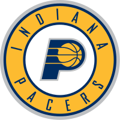
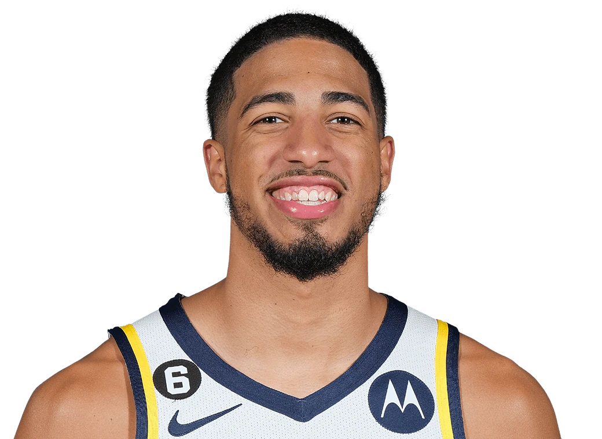

Indiana Pacers

Indiana Pacers je ameriška profesionalna košarkarska ekipa s sedežem v Indianapolisu. Pacers tekmujejo v Nacionalni košarkarski zvezi (NBA) kot član osrednje divizije vzhodne konference lige. Pacersi so bili ustanovljeni leta 1967 kot prvotni član Ameriške košarkarske zveze (ABA) in so postali član NBA leta 1976 kot rezultat združitve ABA in NBA. Domače tekme igrajo na Gainbridge Fieldhouse. Ekipa je dobila ime po stanju v zgodovini Indiane s hitrostnimi avtomobili Indianapolis 500 in industrijo dirkalnih vpreg. Pacersi so osvojili tri naslove prvakov, vse v ligi ABA. Pacersi so bili prvaki vzhodne konference lige NBA leta 2000. Ekipa je osvojila devet naslovov divizije. Šest igralcev iz dvorane slavnih – Reggie Miller, Chris Mullin, Alex English, Mel Daniels, Roger Brown in George McGinnis – je več sezon igralo za Pacers. Za Pacerse so igrali tudi člani dvorane slavnih Adrian Dantley, Gus Johnson in Tim Hardaway. Franšiza ima več trenerjev v dvorani slavnih, med drugim Bobbyja "Slicka" Leonarda, Jacka Ramsayja in Larryja Browna. V začetku leta 1967 je skupina šestih vlagateljev (odvetnik Richard Tinkham, John DeVoe, Chuck DeVoe, podjetnik Lyn Treece, športni agent Chuck Barnes in športni pisec Indianapolis Star Bob Collins) združila svoja sredstva za nakup franšize v predlagani Ameriški košarkarski zvezi. Prvih sedem let so igrali v Indiana State Fairgrounds Coliseum. Leta 1974 so se preselili v razkošno novo areno Market Square v središču Indianapolisa, kjer so igrali 25 let.
Trenutna ekipa

Pacers se niso uspeli kvalificirati za končnico lige NBA 2022 z rezultatom 25–57 v sezoni lige NBA 2021–22, kar je prvič, da se ekipi ni uspelo uvrstiti v končnico v zaporednih sezonah po sezoni 2007–10. V sezoni 2021–2022 je bil tudi ljubljenec oboževalcev Lance Stephenson, ki je tretjič nastopil v franšizi Pacers. Med sezono so Pacersi poleti zamenjali glavne igralce, vključno z Domantasom Sabonisom, Caris LeVert, Justinom Holidayom, Jeremyjem Lambom in Malcolmom Brogdonom. V zameno so Pacersi prejeli predvsem številne izbore v prvem krogu nabora, strelca Buddyja Hielda, veterana Daniela Theisa in Tristana Thompsona ter mlade zvezdnike Tyreseja Haliburtona, Jalena Smitha in Aarona Nesmitha, ki so bili vsi izbrani na loteriji na naboru lige NBA 2020. Ekipa bi na naboru lige NBA leta 2022 izbrala Bennedicta Mathurina kot šestega v skupnem seštevku skupaj z izstopajočim izbrancem drugega kroga Andrewom Nembhardom. Mathurin je bil najvišji izbor Pacers, ki si ga je franšiza lastila, odkar so na naboru NBA leta 1988 izbrali Rika Smitsa kot drugega v skupnem seštevku. 31. januarja 2023 sta bila Mathurin in Nembhard imenovana za vzhajajočo zvezdo NBA 2023. Tyrese Haliburton je bil leta 2023 izbran tudi za svojo prvo tekmo vseh zvezd lige NBA kot rezervni branilec za vzhodno konferenco. Ob menjalnem roku 2023 je ekipa pridobila 3 prihodnje izbore v drugem krogu, Jordana Nworo, Sergea Ibako, kot tudi Georgea Hilla, ki je domačin v Indiani in nekdanji Pacer, v zameno za pravice nabora za Juana Pabla Vauleta.[ Oba, Tyrese Haliburton in Buddy Hield, sta bila izbrana za sodelovanje v NBA tekmovanju za tri točke leta 2023.